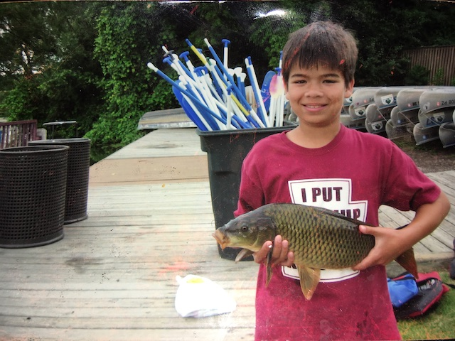
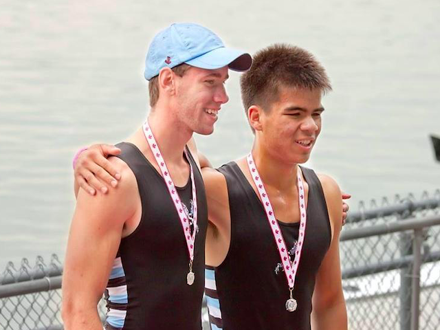
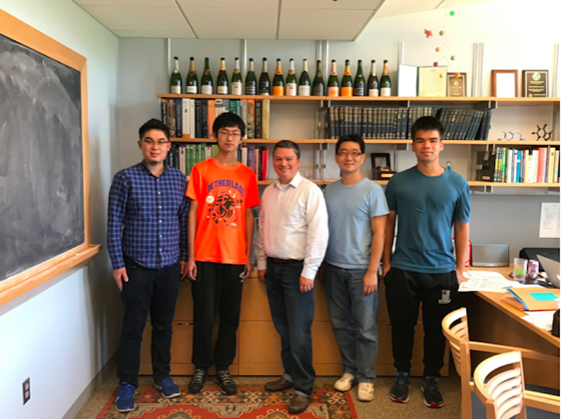
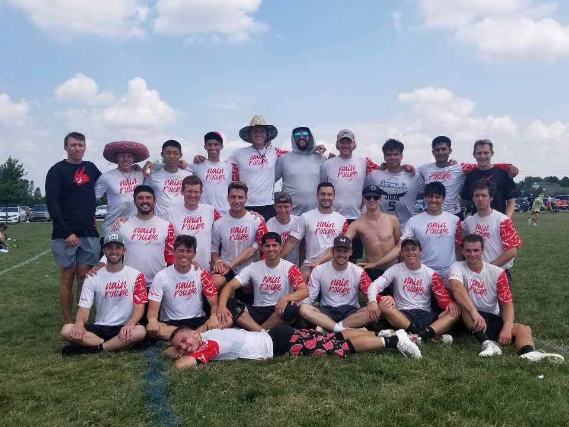

Present
Postgrad
College
Highschool
About Me
About Me
HighSchool:
Outside of school work I enjoyed rowing, competing on the national level in both the US and Canada, and fishing, a hobby of mine since elementary school.


College:
As a high schooler I discovered that I liked chemistry, although I didn’t know much about it at the time (as exemplified by this final project video). When I took organic chemistry in college, I found a topic that fascinated me. I was fortunate to have the opportunity to work in the synthetic organic chemistry lab of Professor Scott Snyder. I never looked back, working in lab alongside Dr. Hyung Min Chi and graduate student Pengfei Hu for ~40 hours a week during the school year, and much more in the summer. Aside from chemistry and classes, I was a dedicated ultimate frisbee player. The team was a close-knit group, and I enjoyed competing alongside my friends.


Postgrad:
I applied to graduate school to pursue a PhD in organic chemistry, and was accepted into some great top ten programs. But, for various reasons, mostly the organic chemistry lifestyle, I chose not to attend. I had never written a line of code before July of 2018, yet CS was appealing to me because of the opportunities it would make available. Over time, I actually found that I very much enjoyed CS, particulary the chance it gave me to build, create, and problem solve.
From July of 2018 to February of 2019, I lived at my local library and did nothing but study and code, except on the weekends when I worked at a coffee shop for a change of scenery. I learned to code in Python, C++, and Javascript, to use Bash, Kivy Language, HTML, PHP, SQL, and CSS, and about the theoretical side of CS - algorithms, data structures, object-oriented programming, big-O runtimes, how data is stored/accessed, etc. In March of 2019 I got my first job as a programmer at Neaton Mathematics, an education software startup, where I worked as a web developer. I designed user interfaces for students using HTML, CSS, Javascript, and PHP. I also helped to strucutre the SQL backend database for progress recording, and made sure it interacted smoothly with the frontend code.
Present:
In early September of 2019 I began working as a data analyst/software developer for the College of Pharmacy at the University of Michigan. I work in the Pai Lab, where the focus is on pharmacokinetic modeling. I do a large range of tasks in the Pai lab including data cleaning/analysis/presentation (Python, R, MS Excel), developing software for streamlining existing processes and teaching purposes (Python, R), running pharmacokinetic models (Monolix, Pmetrics), website upkeep (HTML, CSS, Javascript), and even a little bit of 3D modeling (Tinkercad). In my spare time I still enjoy playing ultimate frisbee.
